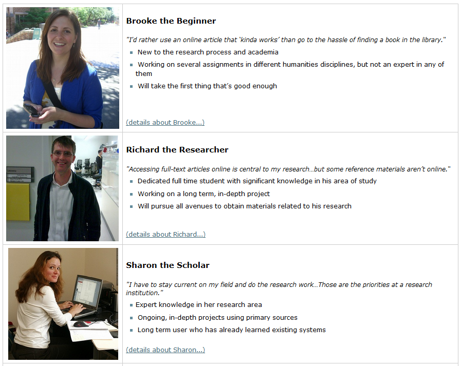
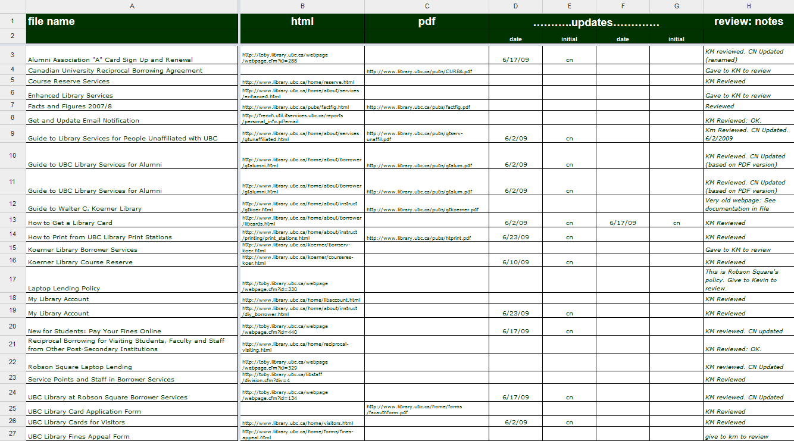
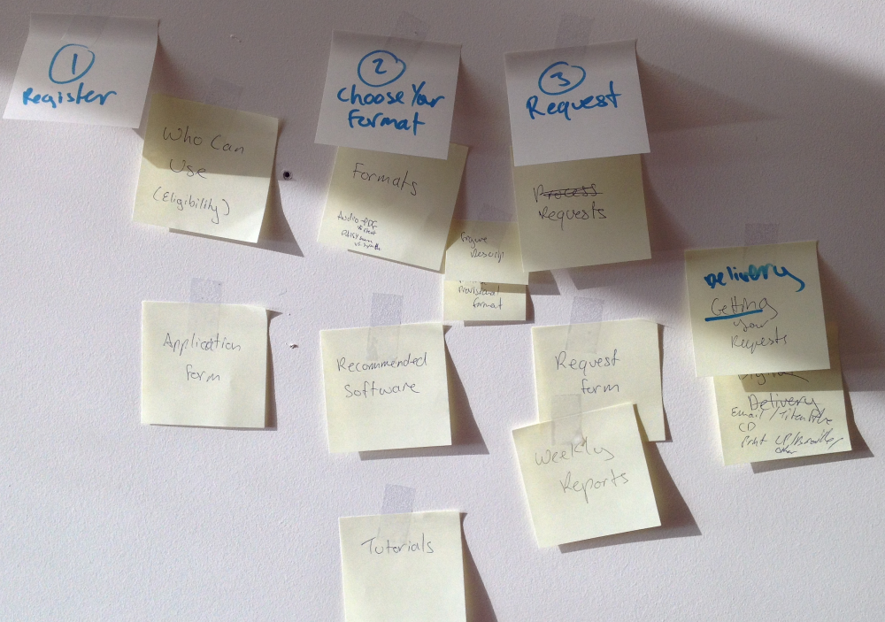
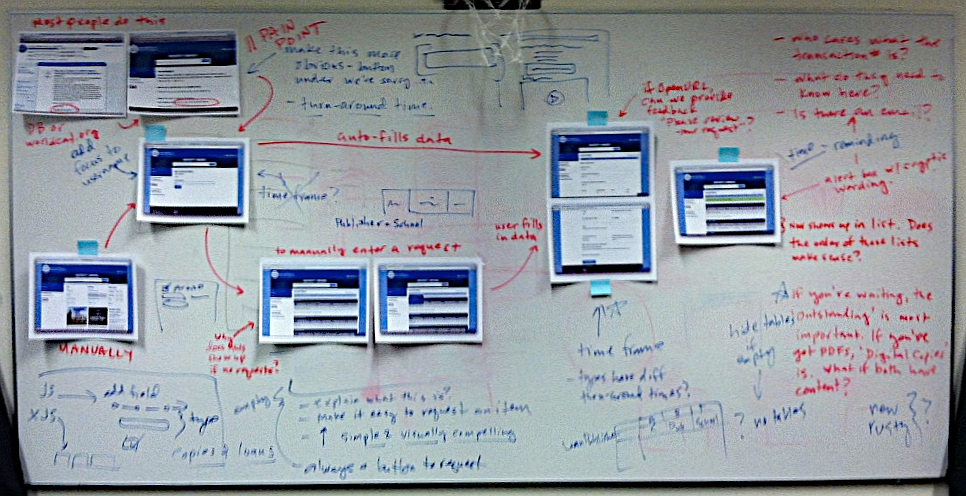

Making Web Services Accessible for Everyone
Cynthia Ng
@TheRealArty
September 7, 2016
 nanand. (2008). Lunch! https://www.flickr.com/photos/thartz00/5034435853/ CC BY 2.0
nanand. (2008). Lunch! https://www.flickr.com/photos/thartz00/5034435853/ CC BY 2.0
 Appel, M. (2015). Sleeping Red Panda. https://www.flickr.com/photos/mathiasappel/23214000449/ Public Domain
Appel, M. (2015). Sleeping Red Panda. https://www.flickr.com/photos/mathiasappel/23214000449/ Public Domain
What is Web Accessibility?
Web accessibility means that people with disabilities can use the Web.W3C Web Accessibility Initiative. (2005). What is Web Accessibility. Introduction to Web Accessibility. http://www.w3.org/WAI/intro/accessibility.php- W3C Web Accessibility Initiative (WAI)
Why Should You Care?
Disability > Minority*
* Based on 2010 US census percentage of total population with a disability, and the percentage of total population of minorities.Policy & Legislation
- The Rehabilitation Act (Section 504 and 508)
- Americans with Disabilities Act
- state legislation
- organizations, grants, etc.
Benefits
- findable
- accessible
- usable
- shareable
- and more!
Approach to Accessibility
Avoid the peanut butter approach.Horton, S. & Quesenbery, W. (2014). A Web for Everyone: Designing Accessible User Experiences. Rosenfeld Media.- Sarah Horton & Whitney Quesenbery
It just won't work to build a complete system and then, in the final stages of development, spread the interface over it like peanut butter.Lewis, C. & Rieman, J. (1994). Task-Centered User Interface Design: A Practical Introduction. http://hcibib.org/tcuid/- Clayton Lewis & John Rieman
 shrosa814. (2010). Tale of Squirrel and Peanut Butter. https://www.flickr.com/photos/shicksba272214/5159576009 With Permission from Owner.
shrosa814. (2010). Tale of Squirrel and Peanut Butter. https://www.flickr.com/photos/shicksba272214/5159576009 With Permission from Owner.
Designing for Assistive Technology
Example Development Process
- Develop the website.
- Add or adjust things to work with screen readers.
- Launch (may happen before #2).
What is Assistive Technology?
an umbrella term that includes [...] devices for people with disabilities [...] by enabling people to perform tasks that they were formerly unable to accomplish, or had great difficulty accomplishing, by providing enhancements to, or changing methods of interacting with, the technology needed to accomplish such tasks.Assistive technology. (2016, August 24). In Wikipedia, The Free Encyclopedia. http://en.wikipedia.org/wiki/Assistive_technology- Wikipedia
Examples of Assistive Technology
- screen readers
- text-to-speech
- screen magnifiers
- joysticks
- mobile devices
- keyboards
All Technology is Assistive Technology.Hendron, S. (2013). All Technology is Assistive Technology: 6 dispositions for designers on disability. https://medium.com/thoughtful-design/a8b9a581eb62- Sara Hendren @ablerism
 animoca. (2012). All the Myriad Androids. http://www.animoca.com/en/2012/05/all-the-myriad-androids/ CC-BY-ND 3.0
animoca. (2012). All the Myriad Androids. http://www.animoca.com/en/2012/05/all-the-myriad-androids/ CC-BY-ND 3.0
Move away from the approach of building separately for disabled users, and concern yourself with creating clean, beautiful, usable, and accessible websites.Riley-Huff, D. A. (2012). Web Accessibility and Universal Design. Library Technology Reports, 48(7), 29-35.- Debra Riley-Huff
Universal Design
Universal design is the design of products and environments to be usable by all people, to the greatest extent possible, without the need for adaptation or specialized design.Mace, R. (1998). Universal design in housing. Assistive Technology, 10(1), 21-28.- Ron Mace
Universal Design Principles
- equitable
- flexible
- simple
- intuitive
- low effort
- approachable
- usable
Examples from Web Content Accessibility Guidelines (WCAG)
- Each page should have a title.
- Have consistent navigation.
- Have a meaningful order to content.
- Provide multiple ways to discover content.
- Captions or transcript of audio/video.
Building Universal (Web) Services
It is important for designers to formulate and adhere to usable design processes and guidelines throughout the entire cycle of development so that the product or service is accessible and universally usable for all.Stephanidis, C. (2009). Universal access and design for all in the evolving information society. In C. Stephanidis (ed.), The Universal Access Handbook (1–11). Boca Raton: CRC Press.- Constantine Stephanidis
 ProphetTenebrae. (2012). Red panda face palm. http://imgur.com/gallery/yS8YGZt
ProphetTenebrae. (2012). Red panda face palm. http://imgur.com/gallery/yS8YGZt
Ask Your Users
Challenges
- technological variety
- user diversity
- bridging the knowledge gap
Understanding Your Users

Getting User Feedback
Personas
 University of Washington Libraries. (2008). UW Libraries Personas. http://staffweb.lib.washington.edu/news/units/ITS/ux/2009-q2/persona-construction/final-personas/uw-libraries-personas-overview-of-the-completed-projectContent Inventory
Card Sort
Task Analysis
 Reidsma, M. (2013). Slide 38. Websites are for People. http://matthew.reidsrow.com/articles/29 CC BY-NC-SA 3.0Developing Your Service
Approaches
Mobile forces you to focus and enables you to innovate in ways you previously couldn’t.Wroblewski, L. (2011). Mobile First. New York: A Book Apart.- Luke Wroblewski
Worry about the less capable first.Usobiaga, J. (2013). Slide 37. Mobile First: As difficult as doing things right. https://speakerdeck.com/swwweet/mobile-first-as-difficult-as-doing-things-right?slide=37- Swwweet

Some Good Practices
- well structured code
- style guides e.g. Normalize CSS
- pattern libraries e.g. UI Pattern Library by GVSU
- polyfills and other helper libraries e.g. picturefill
- APIs e.g. SFU Library API
- testing frameworks or set of evaluation tools e.g. Quail
- good documentation e.g. Phabricator
Some “Special” Considerations
Media
- Images: alt=""
- Audio: transcript
- Video: transcript
- Video: captions
- Video: descriptive audio
- More A/V: controls, no autoplay
- Warning! Check the carousel.
Skip Links
<body>
<a class="hide-text" href="#main">Skip to Main Content</a>
<nav role="navigation">
// Menu
</nav>
<div id="main" role="main">
// Content
</div>
</body>
Keyboard Accessibility


ARIA
Accessible Rich Internet Applications Suite
<div role="alert">
// warning
</div>
Assessing Your Service
Simulation
Evaluation
- W3C validator
- HTML Codesniffer (bookmarklet)
- WCAG Contrast Checker (Firefox plugin)
- WAVE Toolbar
- W3C validator
- HTML Codesniffer (bookmarklet)
- WCAG Contrast Checker (Firefox plugin)
- WAVE Toolbar
Guidelines for Your Content Creators
- Be clear and concise.
- Use headers and tables properly.
- Use descriptive links.
- Describe images if needed.
- Make or choose videos with captions.
Accessibility Statement
Putting It All Together
I’ve learned that what matters [...] is an actionable process — possible to use, adapted to the company’s culture and financially effective.Treder, M. (2012). Beyond Wireframing: The Real-Life UX Design Process. Smashing Magazine. https://www.smashingmagazine.com/2012/08/beyond-wireframing-real-life-ux-design-process/- Marcin Treder
The goal of universal usability is to enable the widest possible range of users to benefit from information and communication services.Shneiderman, B., & Hochheiser, H. (2001). Universal usability as a stimulus to advanced interface design. Behaviour & Information Technology, 20(5), 367-376. doi:10.1080/01449290110083602- Ben Shneiderman
Take Aways
Until people find themselves in a situation where they are disabled due to their surroundings, they cannot fully appreciate how the built and virtual environments can throw obstacles in their paths – and indeed, profoundly affect their quality of life.City of Calgary. (2010). Universal Design Handbook. http://www.calgary.ca/CSPS/CNS/Pages/Publications-guides-and-directories/Universal-Design-Handbook.aspx- City of Calgary
Universal usability is simply good design.Lazar, J. (2007). Universal usability: designing computer interfaces for diverse user populations. Hoboken, NJ : John Wiley & Sons.- Jonathan Lazar